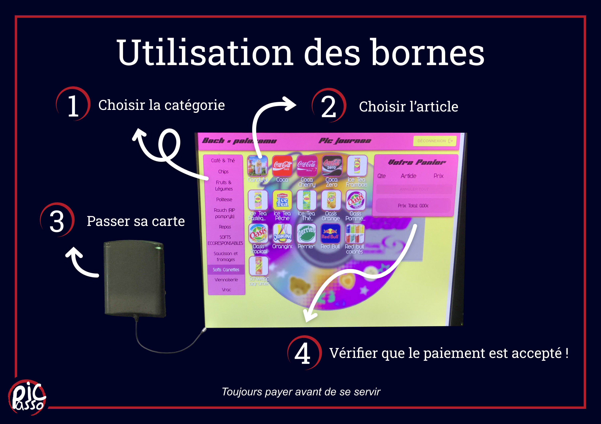
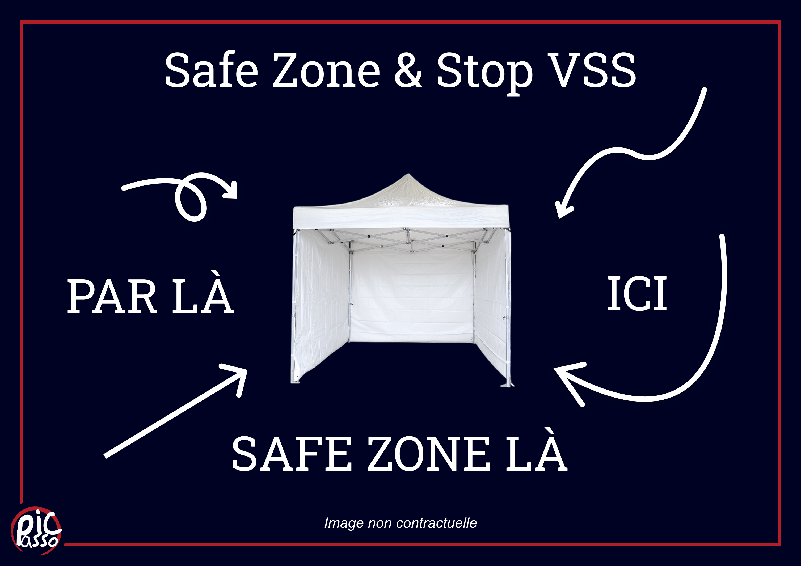
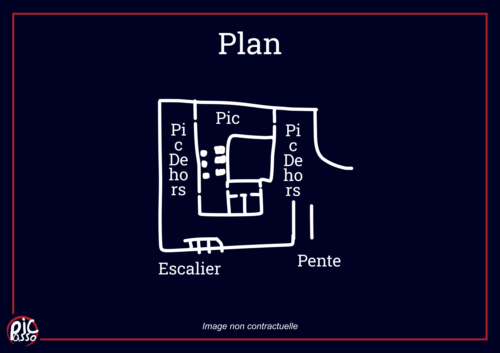

Axes du projet
RSE
durable, inclusif, et plus lisible.
Ici on parle d'environment (déchets, seconde main, sobriété), mais aussi de social et d’inclusivité : un foyer plus clair, plus safe et plus simple pour tout le monde.
🌱 Environnement
🤝 Social
🧩 Inclusivité
🛟 Safe zone
Lisibilité & accueil
La signa, la signa, la signa !!
Une signalétique qui guide vraiment (et pas des bornes illisibles). L’idée : des supports clairs, des pictos et des messages utiles — sans agresser les yeux.

🪧 Signa
Pictos & explications
Explications des bornes, machine à café... Pour faciliter l'utilisation du Pic au plus grand nombre.

🛟 Safe
Safe zone & Stop VSS
Re-faire à neuf la com pour le numéro Stop VSS et pousser encore la com sur la Safe Zone.

🖌️️ Inclu
Inclusif dès l’entrée
Plan du Pic, où trouver quoi, les points importants, les entrées / les sorties. À inclure dans le projet d'aménagement extérieur ?
Améliorations / Nouveautés
À mettre en place
De environment + du social + de l’inclusif.
🎥 Interview / vlog MéGo (et autres prestas)
Un format léger (interview/vlog) pour comprendre d’où viennent nos produits et comment on bosse avec eux (aller voir l'usine etc...). Étendre à d'autre présta ?
♻️ Jeux & anims : recyclerie / seconde main / fait main
Tout ce qui peut venir de la seconde main doit venir de la seconde main.
Et pousser les jeux personnalisés “Pic” (ou y a que moi qui trouve ça marrant ?).
🌱 Environnement : plus d’idées
Mini-chantiers : mieux trier, mieux stocker, réduire les déchets évitables
et choisir des options plus propres quand c’est possible (un peu bateau mais ça reste un bon rappel).
🤝 Social & inclusif : rendre le Pic plus “facile”
Les bornes illisibles (et autres), c’est tchao : définir des repères clairs et compréhensibles qui aident vraiment tout le monde (et évitent que des personnes se sentent "perdues"). Rôle Resp RSE : vraiment définir les pratiques à adopter par le reste de la team.
🎧 Boycott Spotify → Go Deezer
Tout est dans le titre en vrai... Spotify c'est nul nul nul niveau RSE. Ça prend 5min de faire le transfert d'une plateforme à l'autre alors pourquoi pas ?
📬 Et une adresse mail alors ?
Vous ne le saviez peut être pas mais le Pic à une super adresse Gmail : picasso.durable@gmail.com. Eh oui comme quoi iels étaient déjà en avance à l'époque. Mais la remettre d'actualité serait pas mal, ça rentre dans votre idée de considérer la RSE comme un vrai rôle à part.
🚭 No Smoking Area
Trop de mégots par terre ? Les gens ne respectent pas les cendriers ? Un Pic cigarettes interdites (Vape toujours quand même faut pas abuser), définition d'un coin fumeur. Peut-être commencer par appliquer une politique plus stricte sur les mégots.
1 mégot par terre = 1 an de ban (ou un truc du genre hein)
1 mégot par terre = 1 an de ban (ou un truc du genre hein)
Sécurité & prévention
Former tôt, afficher bien, rassurer
Un Pic safe c’est aussi un Pic mieux.
🛟 Safe zone
Un cadre clair + des gestes simples.
Stop VSS • prévention • signa • Lettre = 7:c
🧑⚕️ Formations (réserver les dates en avance)
PSC1 / gestes qui sauvent, formation alcool, formation VSS :
on s’y prend tôt pour éviter de faire ça en milieu de semestre.
PSC1
Gestes qui sauvent
Alcool
VSS
📣 Signa / Com Safe zone
Re-travailler la signa pour la safe-zone et le numéro Stop VSS lors des soirées (peu ou pas visible, peu faire bien mieux).
Simple & visible.
Mieux vaut prévenir que guérir.
Le but : que chacun se sente à l’aise — et que l’équipe sache quoi faire en cas de problème.
Projet à continuer
On garde le cap
La RSE, c’est aussi l’amélioration continue.
♻️ Revalorisation des déchets : continuer fort
On continue la revalorisation : clarifier les bacs, rendre le geste simple
et suivre ce qui marche. (ex: Cannettes à travailler)
🧾 Bilan d’améliorations du Pic
Un bon gros bilan 1x / an : ce qui va, ce qui bloque et les prochaines actions (en RSE évidement - bah oui gros nigaud).